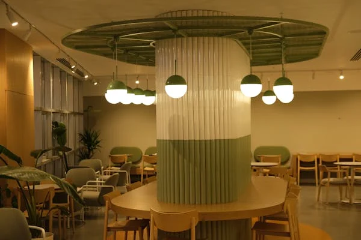

The history of chairs is a fascinating journeythat reflects changes in culture, technology, and design over the
centuries.Here’s an overview of the evolution of chairs throughout history
Our passion for outdoor furniture drives us to design durable, aesthetically pleasing, and functional chairs
perfect for any garden, patio, or balcony.
With years of experience in the industry, we use only the highest-quality materials, ensuring each chair is built
to last and withstand the elements. Our collection offers a variety of styles to suit every outdoor space, from
classic to contemporary designs.
We pride ourselves on exceptional craftsmanship, paying attention to every detail. Whether you're looking for a
cozy chair to relax in or a statement piece for your garden, we have the perfect option.
Customer satisfaction is at the core of our mission. We are committed to delivering products that enhance your
outdoor living experience. Explore our wide range of garden chairs and find the ideal match for your space today.
Our mission is to create ergonomic solutions that cater to the needs of every professional, ensuring long hours
of work are comfortable and efficient.
With years of expertise in the office furniture industry, we understand the importance of good posture and the
role it plays in your overall well-being. That's why we focus on creating office chairs that combine both
functionality and style.
Our chairs are crafted using premium materials, providing durability and exceptional comfort. Whether you're
looking for a sleek executive chair or a versatile task chair, our collection has something for everyone.
At [Rich Field Chair], we believe in creating products that help you stay focused and perform at your best. We
offer a wide range of designs to suit different tastes and work environments.
Your satisfaction is our priority. We are committed to delivering top-notch customer service, fast delivery, and a
seamless shopping experience. Choose [Rich Field Chair] to elevate your office space with the perfect chair.

Our goal is to transform your dining space with chairs that are both functional and aesthetically pleasing,
ensuring every meal is enjoyed in comfort.
With years of experience in the furniture industry, we offer a wide range of dining chairs designed to suit
various tastes and interior styles. From modern and sleek to classic and elegant, our collection provides the
perfect match for your dining room.
Crafted with quality materials, our dining chairs are built to last and withstand daily use, providing both
durability and comfort. We believe that great design should be accessible, and we offer options to fit any budget.
At [Your Brand Name], customer satisfaction is our priority. We are committed to providing top-tier service, fast
delivery, and an easy shopping experience. Whether you're hosting a family dinner or entertaining guests, our
dining chairs add the perfect touch to your space.
Our commitment to exceptional design and superior craftsmanship ensures that each chair brings elegance and
grandeur to your space.
Inspired by timeless royal traditions, our chairs are crafted to offer the perfect blend of comfort, style, and
prestige. Whether you're outfitting a palatial residence or adding a touch of regality to your home, our royal
chairs make a statement.
Each piece is meticulously crafted using the finest materials, including luxurious fabrics, intricate woodwork,
and ornate detailing. We take pride in offering chairs that not only elevate your space but also stand as symbols
of refined taste.
At [Your Brand Name], we cater to those who appreciate the finer things in life. Our collection features designs
that exude power, grace, and opulence, making every occasion feel extraordinary.
Customer satisfaction is our priority, and we’re dedicated to delivering the highest level of service and
craftsmanship.
Our chairs are crafted using premium materials, providing durability and exceptional comfort. Whether you're
looking for a sleek executive chair or a versatile task chair, our collection has something for everyone.
At [Rich Field Chair], we believe in creating products that help you stay focused and perform at your best. We
offer a wide range of designs to suit different tastes and work environments.
Your satisfaction is our priority. We are committed to delivering top-notch customer service, fast delivery, and a
seamless shopping experience. Choose [Rich Field Chair ] to elevate your office space with the perfect chair.